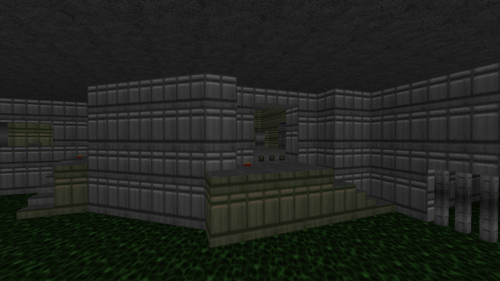

DOWNLOAD LINKS


| Year | 2021 |
| IWAD | doom2.wad |
| Source port | Boom-compatible |
| Game mode(s) | Single-player |
| Map(s) contributed | MAP09 |
Full Moon is a Boom-compatible megawad of 1-hour speedmaps, curated by Dubbag. Part of the “Time” trilogy, the mapset is a spiritual continuation of the author’s previous community projects Tenth Gear and Half Moon, which consisted of 10-minute and 30-minute speedmaps respectively.
My contribution towards Full Moon occupies the MAP09 slot, and it’s titled “Mandatorianism”. The name comes in no small part from the map’s techbase aesthetic. The map is a fairly quick but (semi-)hectic punch-through consisting of essentially two distinct spaces: the nukage pit and the rest of the map. Even though I was working with a time limit, I wanted to experiment a tiny bit with lighting in the map, which I feel ended up paying off, even if the lighting work isn’t the best. The height variation is another thing that came from a need to try something new and break out of the bad mapping habits I’d developed over the years. Other than that, I have nothing special to say about the map.